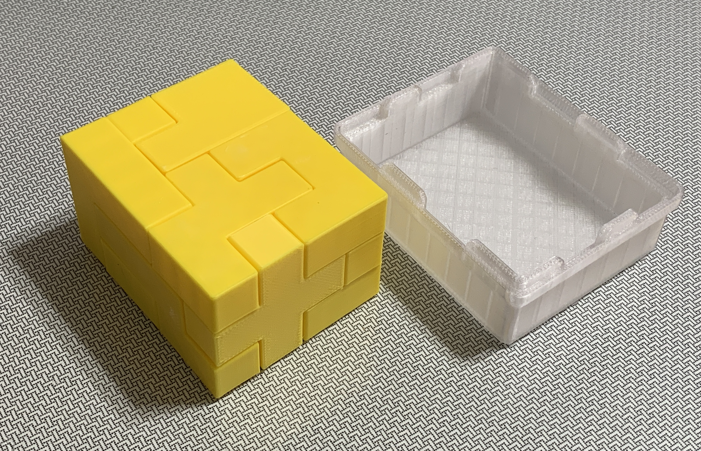
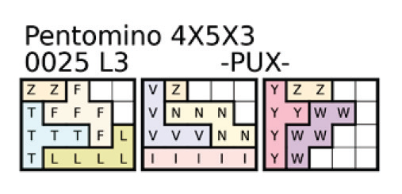
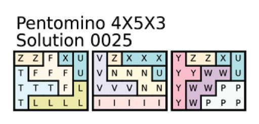
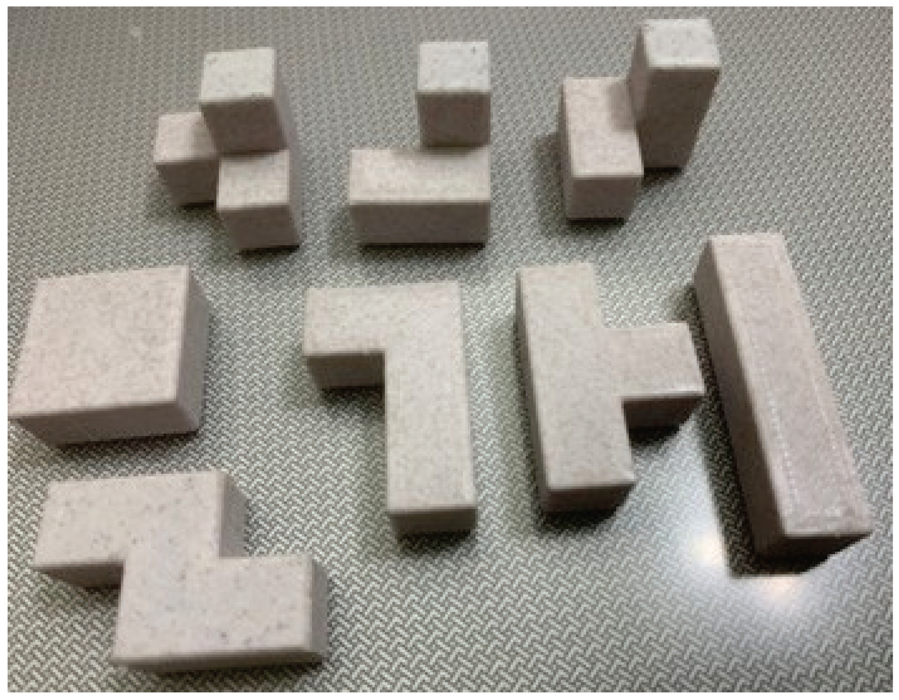
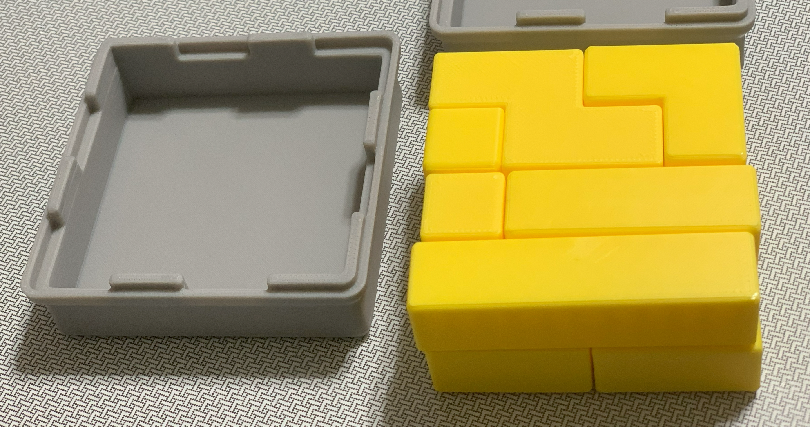
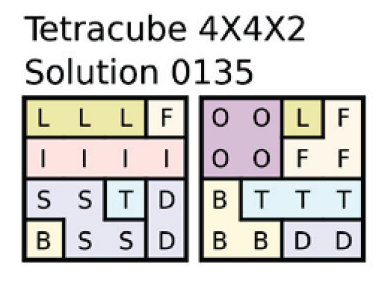
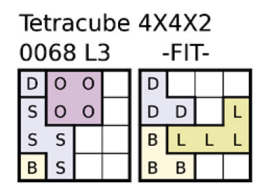
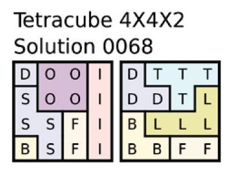

Pentomino（ペントミノ）および Tetracube（テトラキューブ）のデータ公開ページです。
ペントミノはかなり難しいので、長続きしません。6X10の箱に入れる問題の場合、答えは2,339通りも有りますが、 答えにならない組み合わせが山ほどあるので、仕方ありません。
2,339通りの答えはPythonと言うプログラミング言語を使って解きました。その答えから、2,339通りの問題集を作りました。 どの問題も必ずひとつの解答を持ちます。下記は問題のひとつです。 "Pentomino 6X10"と書かれているのはこの問題が6x10の箱に収める事を示しています。 次の"0047"は47番目の問題で、"L3"はレベル３で未収納ピースが３個と言う事です。 その３個のピースはＦ,Ｔ,Ｕの３個です。
下図は問題0047の解答です。

サンプル問題集は下記からダウンロードして下さい。
| ファイル名 | 形式 | リンク |
|---|---|---|
| Pentomino Quest Sample Edition | 📥 Download |
ペントミノの３Ｄプリンタで製作する為のＳＴＬデータを開示します。
ペントミノは立方体を５個平面上に並べたときの全組み合わせ１２個のピースで構成されます。 下図は、PenA14D12PCE.STL を印刷したときの仕上がり図です。立方体の組み合わせで、 各辺は14㎜となっています。
12個のピースを収納するケースで、6X10の平面型と5X6X2、5X4X3の立体型があります。 これらのケースは身と蓋が同形になっています。
各辺が5,4,3の箱にピースを立てたり、寝かしたりして納めます。この解答は3.940個もあります。しかし、いくら遣っても答えは中々見つかりません。写真は納まった状態を示しています。

収まった状態を外から見ても内側がどうなっているかが判りません。その構造を正確に表現したのが下図です。 3枚の格子が並んでいます。左の格子を下側とすれば、右の格子は上側ですが、その逆でも構いません。 面に水平に置いたピースは形が全部見えます。もちろん、裏と表があります。この問題では、ピースＺは立っています。 この問題はレベル３で、ＰＵＸが未収納です。答えは必ずひとつ有るので、安心してじっくり考えて下さい。

頭の体操です。特に立体認識力が強化されます。考え方は色々あります。順番としては、水平に置けるかどうかを最初に調べます。この場合、Ｐは水平に置ける場所が2カ所あります。３個並んだ部分を水平にする場合と立てる場合ですが、立てるとＷとの境目に飛び地となった空白が出来るので、３個がたての置き方は却下します。あとはＵとＸです。 ピースを使って、試して見るのも良いでしょう。下図は解答です。

ペントミノは立方体５個を平面に並べた組み合わせの１２種のピースを使います。
ペンタは５個を意味するラテン語のペンタから来ています。
４個を意味するテトラでもテトラミノが有り、ピースは５種類です。この場合全部で２０個の立方体と
なりますが、４Ｘ５＝２０には綺麗に入りません。２セット分の４０ピースを使うと幾つかの解答が出来ます。
４個の立方体を平面に並べる代わりに立体に並べると８ピースのセットが出来ます。
このセットの事をテトラキューブと呼びます。テトラキューブを4X4X2の箱に収める仕方は695通りあります。
下図はテトラキューブの８ピースです。

テトラキューブの８ピースを4X4X2に纏めたところです。

上図の並べ方と下図の解答には共通点が有ります。それは4X2X2を2個並べた形と言う事です。 ８ピースを４ピースずつに分ける事で、組み合わせが減り、試行回数が激減します。

次はテトラキューブの問題です。ピースＬは２つの境界を跨いでいるので、4X4X2を2個組み合わせた形にはなりません。 未収納ピースはＦＩＴの３個です。ピースＩとＴは水平に嵌ります。すると残りのＦは決まりました。

答えです。

テトラキューブの３Ｄプリンタ用ＳＴＬデータです。


{kind=link}